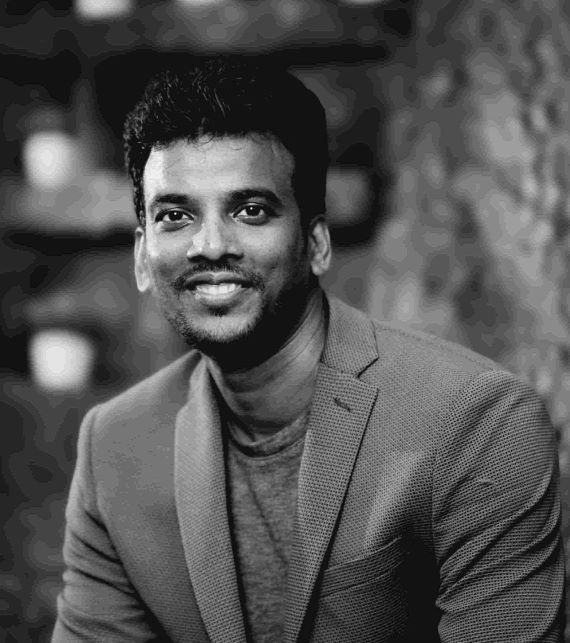

19+ years in enterprise IT — now leading an AI & automation practice and the team building governed enterprise AI agents. This page tells that story the way I ship: start to finish, with evidence.

Tata Consultancy Services. Sales-audit reconciliation posting to Oracle — millions moving nightly, and the books had to balance by morning. No slideware, no shortcuts. Just systems that either worked or didn't. That standard never left.
Not a straight line — a widening one. Data and automation, then programs measured in tens of thousands of devices. Follow the ember.
Financial Analyst / Assistant Manager, Corporate Finance — mainly supporting automation initiatives alongside P&L and data-warehouse reporting, functional design and change controls. Where process discipline met automation.
data & automation50+ RPA automations across HR, Finance, and Procurement — leading consultants, business analysts, and developers.
50+ automationsAIOps (Nexthink / ServiceNow) plus enterprise backup & recovery — turning reactive IT operations into measured, proactive ones.
40,000-device estateMy first direct step into AI — straight off the AIOps program. Leading the team running rubric-driven evaluation of Microsoft Copilot for Entra with Microsoft Engineering: accuracy, correctness, user satisfaction. 83 bugs logged, 19 resolved — 6 critical — before general availability; response satisfaction up from about 42% to 57%.
42% → 57% satisfaction · first AI roleIn the interim, I ran delivery for a Windows 11 migration ahead of Windows 10 end of support — with AI-assisted analytics sharpening hardware-compatibility and app-readiness assessment. Delivery at scale, now AI-informed.
12,000 devicesEvery AI project I've built or led — governed agent platforms, the agents that run on them, and the patterns behind them — is on the Projects page, with each architecture laid out layer by layer.
Getting AI and automation adopted, governed, and paying for itself.
Supplying the AI side of deals and turning agentic use-case analysis into pilot plans and roadmaps, with an engineering team that builds agents on a common, governed framework — and still building them hands-on.
Moving organizations from AI curiosity to dependable, everyday use — structured enablement, peer champions, leaders modeling the change, and adoption that's measured, not assumed.
Programs from $200K to $20M with cross-functional teams — migrations, AIOps, backup & recovery, and RPA at scale, owned end to end from budget to executive stakeholder.
Pilot to production without the stall.
Rubric-driven LLM evaluation — accuracy, technical correctness, user satisfaction — before anything reaches users. It's how my team helped lift Microsoft Copilot for Entra response satisfaction from about 42% to 57%.
Role-based access, audit-logged actions, and an automated model-lifecycle steward that migrates agents off retired LLMs — compliance without manual toil.
Technology is 30% of a transformation. Readiness measurement, communications, and executive alignment are what make the other 70% land.
Scale-to-zero services, token budgeting per output, regional-only infrastructure. Efficiency is engineered in from day one — the same discipline whether the program is $200K or $20M.
A structured 12-week program I authored for moving an organization from Copilot curiosity to dependable, everyday use — because access is no longer the constraint; intentional adoption is.
Copilot introduced through the work people already do — email, meetings, documents — including where it fails, how to guide it without over-engineering prompts, and how enterprise data shapes results.
Copilot applied against actual emails, documents, and deliverables in small-group sessions that surface real friction points, encourage shared learning, and normalize AI-assisted work within teams.
Credible peer champions, leaders modeling usage visibly, reinforcement through relevant examples — adoption sustained by influence rather than enforcement, measured and adjusted as it grows.
12-WEEK ROADMAP · Mobilization (wk 1–2) → Skill Foundation (3–6) → Embedded Enablement (6–9) → Review & Direction (10–12)
Consulting engagement, a leadership conversation, or a hard question about where enterprise AI is really headed — I'm open to all three.
Open to: AI & Automation Practice Leadership · AI Manager · AI Deployment · AI Enablement & Adoption · AI Program Management
The ember that's been following you down the page? It's in safe flippers — Skipper, my AI, is holding it at the bottom-right, one tap away on every page. Built on my own Firebase + Gemini stack. The site is the proof.